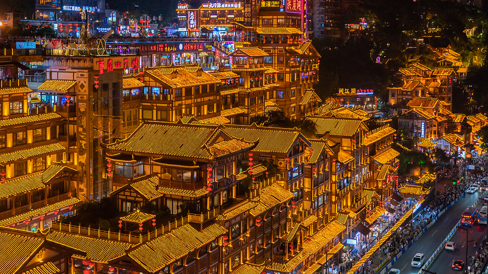
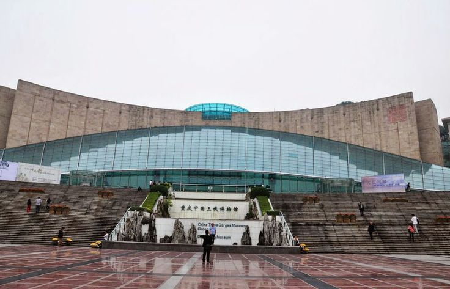
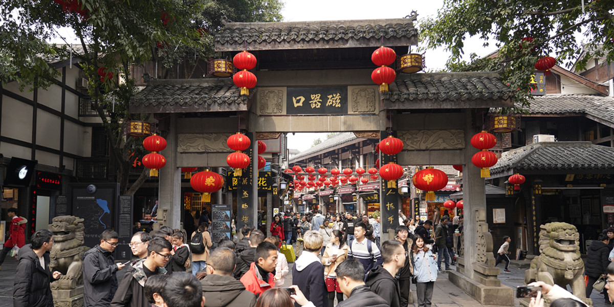
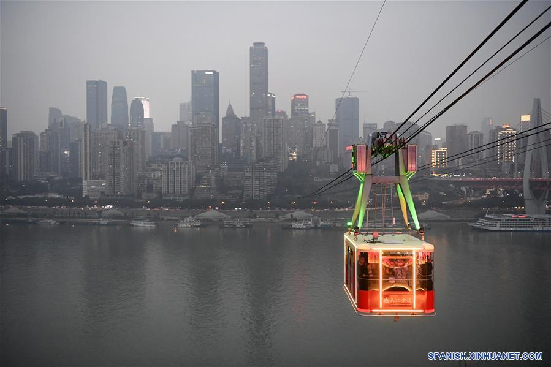

Chongqing: A Cidade Montanhosa da China

Chongqing é uma das maiores cidades da China e está localizada no sudoeste do país. Conhecida como a "Cidade das Montanhas", é famosa por sua paisagem urbana impressionante, gastronomia picante e pela vista espetacular do encontro dos rios Yangtzé e Jialing.
- País: China
- População: Mais de 30 milhões de habitantes
- Famosa pelo Hot Pot de Chongqing
- Localização próxima às Três Gargantas do Rio Yangtzé
Principais Pontos Turísticos
Hongya Cave

A Hongya Cave é um dos pontos turísticos mais famosos de Chongqing. Localizada às margens do rio Jialing, ela é conhecida por sua arquitetura tradicional chinesa construída na encosta da montanha. À noite, o local fica ainda mais impressionante com suas luzes douradas que iluminam todo o complexo, lembrando cenários de filmes e animações.
Three Gorges Museum

O Three Gorges Museum é um importante museu localizado no centro de Chongqing, em frente ao Grande Salão do Povo. Ele apresenta exposições sobre a história da região, a cultura local e o impacto da construção da Represa das Três Gargantas no rio Yangtzé. O museu é conhecido por seu acervo rico em artefatos históricos e por ajudar os visitantes a entender melhor o desenvolvimento da cidade e da região.
Ciqikou Ancient Town

A Ciqikou Ancient Town é uma vila histórica tradicional localizada em Chongqing, com mais de mil anos de história. Conhecida por suas ruas estreitas de pedra, arquitetura antiga e lojas de artesanato, ela preserva a cultura e as tradições da região. É um ótimo lugar para experimentar comidas típicas locais e conhecer o estilo de vida tradicional chinês.
Teleférico do Rio Yangtzé

O Teleférico do Rio Yangtzé é uma das atrações mais famosas de Chongqing e oferece uma vista panorâmica impressionante da cidade. Ele atravessa o rio Yangtzé ligando diferentes áreas urbanas, permitindo que moradores e turistas observem os arranha-céus, as montanhas e o movimento dos barcos no rio. Além de ser um meio de transporte, tornou-se um importante ponto turístico da cidade.